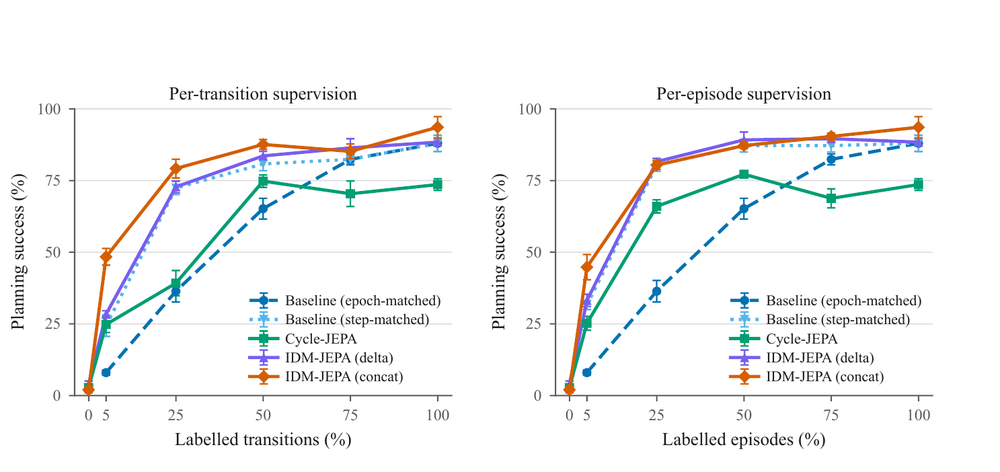
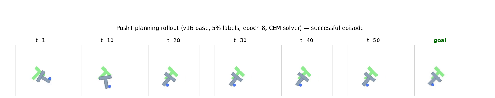

TL;DR JEPA world models normally need an action label on every frame. IDM-JEPA infers the missing actions with an inverse dynamics model, so the world model can train on every transition even when most are unlabeled.
Abstract
Joint Embedding Predictive Architectures (JEPAs) offer a compelling framework for learning world models directly in compact representation spaces. However, existing methods remain dependent on dense, frame-by-frame action supervision, forcing them to discard unlabeled transitions and reducing their ability to leverage action-sparse or passive video datasets.
We introduce IDM-JEPA, a semi-supervised framework that enables stable end-to-end JEPA training on partially labeled data by inferring missing control signals via an Inverse Dynamics Model. By routing inferred latent action codes through the same encoder as ground-truth actions, pseudo-actions and real actions become interchangeable during training and downstream Model Predictive Control (MPC), at no cost to the planner, which searches over recorded actions throughout.
On the continuous PushT benchmark, IDM-JEPA reaches 48.4% planning success from 5% action supervision, against 24.4% for an action-conditioned baseline trained on the labeled fraction alone under a matched budget of gradient steps. The advantage is confined to the extreme-scarcity regime: at an equal step budget the baseline reaches 72.4% at 25% supervision and approaches full-data performance by 50%. Enforcing action-sensitivity through cycle-consistency on imagined transitions does not substitute for grounding codes in recorded ones. Inferred actions substitute for labels only where the unlabeled pool adds state coverage.
Method

IDM-JEPA builds on LeWorldModel. Its one addition is an inverse dynamics model gψ that reads two consecutive latents and outputs an action code in the same space as the recorded actions. Whenever a transition is labeled, the recorded action is used; otherwise, the inferred code takes its place. Everything is trained end to end with a single objective:
- ℒpred: next-latent prediction error, using recorded or inferred actions.
- ℒsig: SIGReg anti-collapse regularizer on the encoder (no stop-gradient, no target network).
- ℒact: action-alignment error between inferred and recorded actions, only on labeled transitions.
Because inferred and recorded actions share the same action encoder, the planner is unchanged: at test time, CEM-based MPC searches over real action sequences exactly as in the fully supervised model.
Results

Planning success (%) on PushT, per-transition masking
| Labeled fraction ρ | Baseline, epoch 8 | Baseline, matched steps | IDM-JEPA (concat) |
|---|---|---|---|
| 5% | 8.0 ± 0.9 | 24.4 ± 3.8 | 48.4 ± 2.9 |
| 25% | 36.4 ± 3.8 | 72.4 ± 2.3 | 79.2 ± 3.3 |
| 50% | 65.2 ± 3.6 | 80.8 ± 2.3 | 87.6 ± 1.7 |
| 75% | 82.4 ± 1.9 | 82.4 ± 1.3 | 85.2 ± 2.6 |
| 100% | 88.0 ± 2.8 | 93.6 ± 3.7 | |
Mean ± s.e.m. over five evaluation seeds (250 episodes per cell). The largest gain is at 5% labels, where unlabeled transitions add the most state coverage. At 25% and above, the step-matched baseline catches up quickly, because PushT's unlabeled expert demonstrations largely repeat what the labeled ones already show.
Key takeaways
- Inferred actions help most when labels are scarce: doubling planning success at 5% supervision.
- Compute matching matters: giving the baseline the same number of gradient steps raises it by up to 36 points, so fair comparisons need it.
- Cycle-consistency is not a substitute: enforcing action-sensitivity on imagined transitions (Cycle-JEPA) does not match grounding codes in recorded transitions.
Planning rollouts
CEM planning in latent space on PushT, using an IDM-JEPA (concat) model trained with 75% of transitions labeled.

BibTeX
@inproceedings{perrier2026idmjepa,
title = {{IDM-JEPA}: Semi-Supervised Action Inference via Inverse Dynamics
in Joint-Embedding Predictive Architectures},
author = {Perrier, Ludovic and Marceau Caron, Ga{\'e}tan},
booktitle = {NeurIPS 2026 Workshop on World Models in Physical AI},
year = {2026}
}